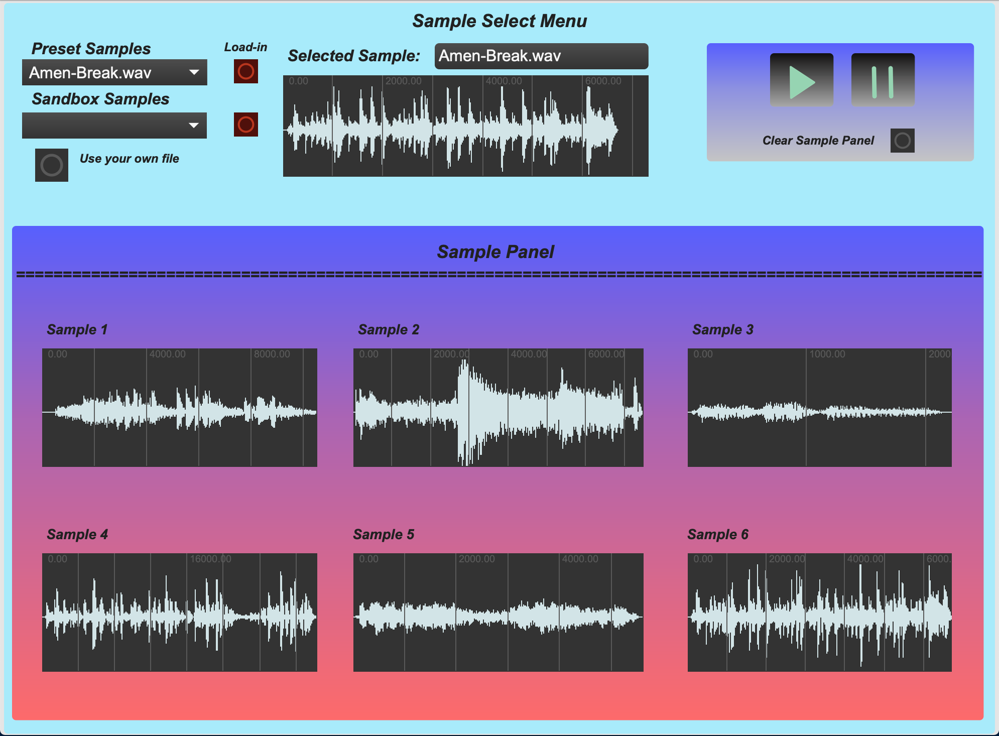
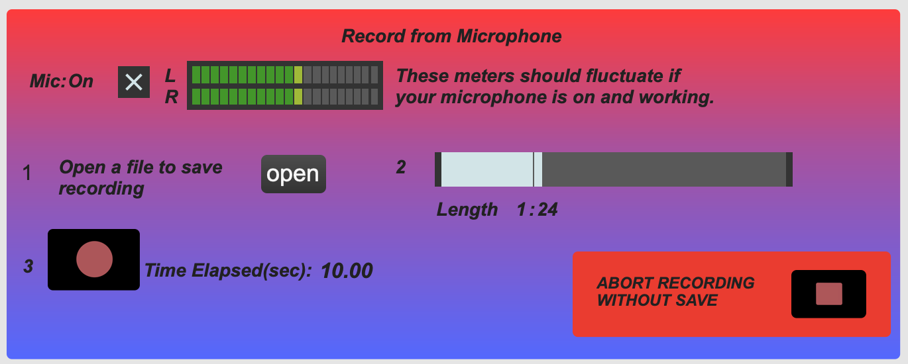
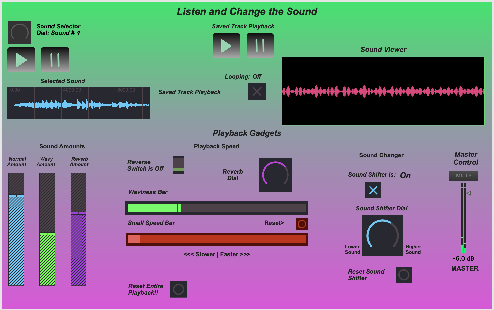
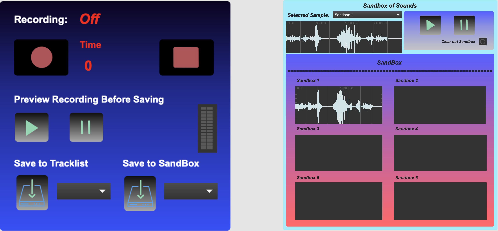
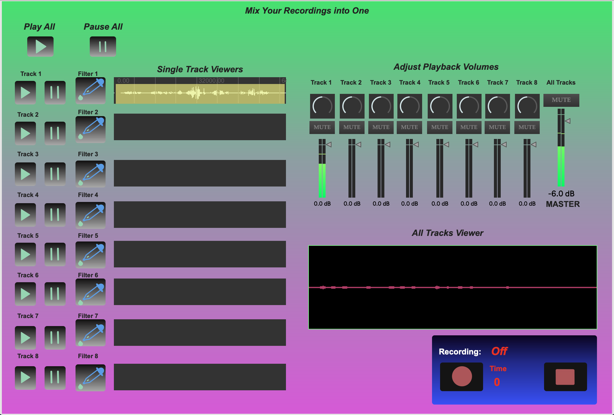
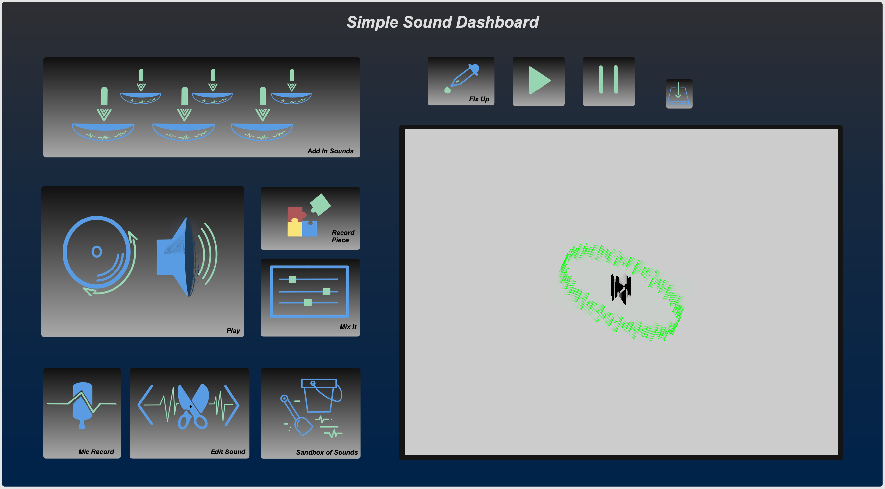
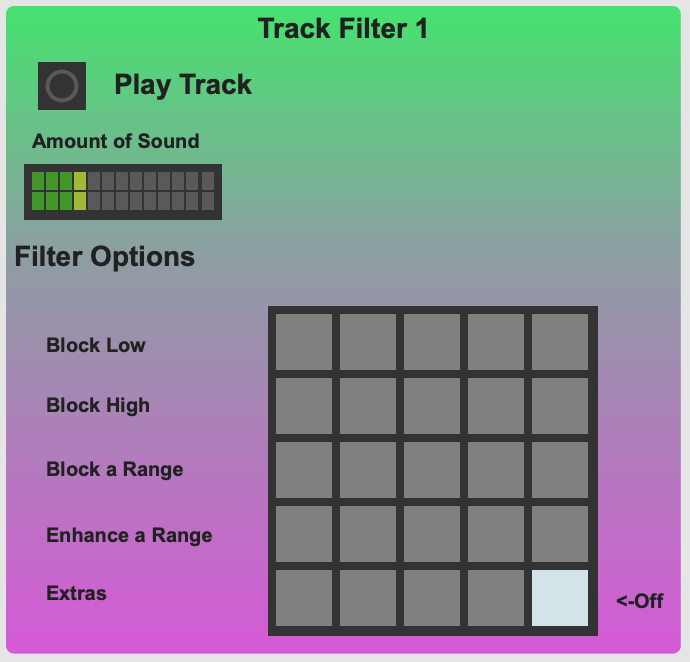

A Fresh Take on Music Creation: Simple Sound
Music is an essential part of life and, for me, is a creative outlet that has no wrong answers. Nowadays, there are many options for creating music, and the most prominent is a digital audio workstation (DAW), such as GarageBand, ProTools, or Logic Pro. Through my experience, I found that DAW users break down into two categories: those who are extremely comfortable and second-natured in their respective DAW, and casual users who look expertise and find it overwhelming. Now, I am not trying to replace DAWs, or imply that they do not offer great features for music creation; However, I am saying they do not offer a simple approach. I do not see many options that simplify the music creation process for more inexperienced users. I want to make something music producers, children, and elderly people alike could enjoy use as a creative outlet. I begin my project with one goal: Empower anyone to make music.
With this in mind, I start with the traditional flow of music creation in DAWs is wide-open. The digital audio workstation has every option at the users disposal without distinction and indication of when they should be used. Counterintuitively, this unstructured layout actually reduces the creativity of the user with decision overload. This is where I begin restructuring the music creation process. In Simple Sound, the flow is modularized into a simple flow: Add sounds to use, play and manipulate those sounds, record.
To start, one can input a preset sound or a file of your choosing in the Sample Select Menu.
Alternatively, the Mic Record module can be used to record sounds live.
When sound is loaded in, by way of the Sample Select Menu, the Playback Module can be easily used to create new sounds!
One can use the Record Module to record output, and either add it to a track or send it to the Sandbox of Sounds to be edited and added back into the Sample Select Menu for re-use in playback.
When a recording is saved to the tracklist, two things happen. First, the track is added to its corresponding track in the Mix It Module.
Second, a ring appears on the Simple Sound Dashboard to represent each additional track added to the 'Mix It' Module.
Each Track has a dropper icon to its left, which is where filters are applied. In more intensive forms, a filter is created by understanding frequency bands and many types of filters that help eliminate or highlight certain frequencies, measured in Hertz. In Simple Sound, filters are much easier to apply. Each track can have its own filter, and a composition can have a filter as well. All filters are chosen by an easy and intuitive selection.
Above are all the elements of Simple Sound, and all one needs to get started in creating music. Simple Sound, with all its ease of use, cannot replace a Digital Audio Workstation for a skilled musical professional, but even the most talented producer can use Simple Sound to experiment and more smoothly flesh out ideas. In essence, Simple Sound makes it easier to create what's in your head in a real and exciting way. For a full walkthrough of the software and finished song, see video.
With this in mind, I start with the traditional flow of music creation in DAWs is wide-open. The digital audio workstation has every option at the users disposal without distinction and indication of when they should be used. Counterintuitively, this unstructured layout actually reduces the creativity of the user with decision overload. This is where I begin restructuring the music creation process. In Simple Sound, the flow is modularized into a simple flow: Add sounds to use, play and manipulate those sounds, record.
Simple Sound Dashboard
To start, one can input a preset sound or a file of your choosing in the Sample Select Menu.
Sample Select Menu and Active Sounds Panel
Alternatively, the Mic Record module can be used to record sounds live.
Record Live Sounds Module
When sound is loaded in, by way of the Sample Select Menu, the Playback Module can be easily used to create new sounds!
Get Creative! Playback Module
One can use the Record Module to record output, and either add it to a track or send it to the Sandbox of Sounds to be edited and added back into the Sample Select Menu for re-use in playback.
Record Playback and Sandbox of Sounds Modules, respectively
When a recording is saved to the tracklist, two things happen. First, the track is added to its corresponding track in the Mix It Module.
Mix It! Tracklist Viewer & Composition Panel
Second, a ring appears on the Simple Sound Dashboard to represent each additional track added to the 'Mix It' Module.
A Track Ring Appears
Each Track has a dropper icon to its left, which is where filters are applied. In more intensive forms, a filter is created by understanding frequency bands and many types of filters that help eliminate or highlight certain frequencies, measured in Hertz. In Simple Sound, filters are much easier to apply. Each track can have its own filter, and a composition can have a filter as well. All filters are chosen by an easy and intuitive selection.
Sound Dropper Module: A New Way to Filter Sound

Above are all the elements of Simple Sound, and all one needs to get started in creating music. Simple Sound, with all its ease of use, cannot replace a Digital Audio Workstation for a skilled musical professional, but even the most talented producer can use Simple Sound to experiment and more smoothly flesh out ideas. In essence, Simple Sound makes it easier to create what's in your head in a real and exciting way. For a full walkthrough of the software and finished song, see video.